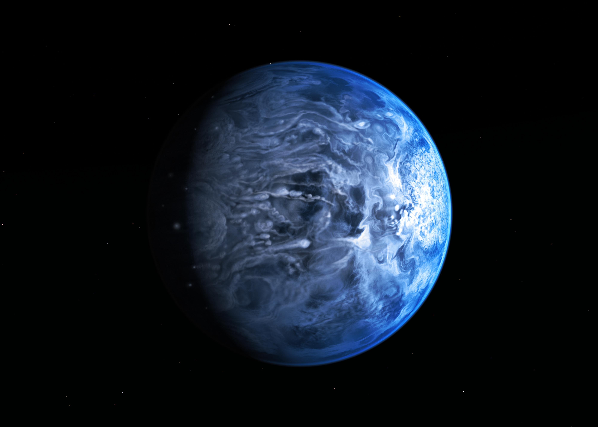
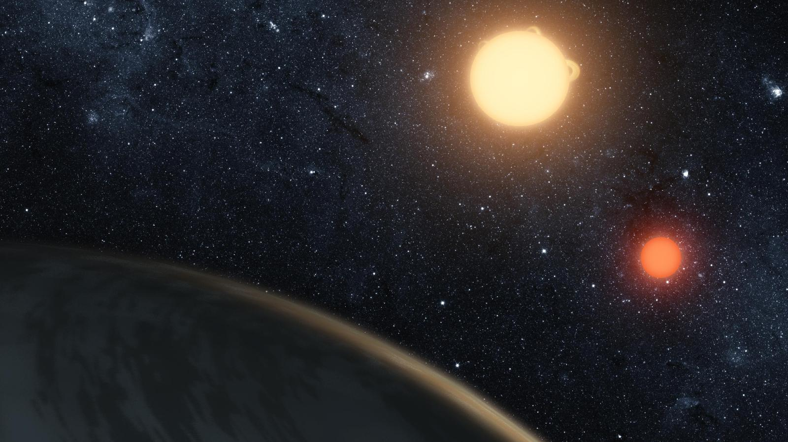
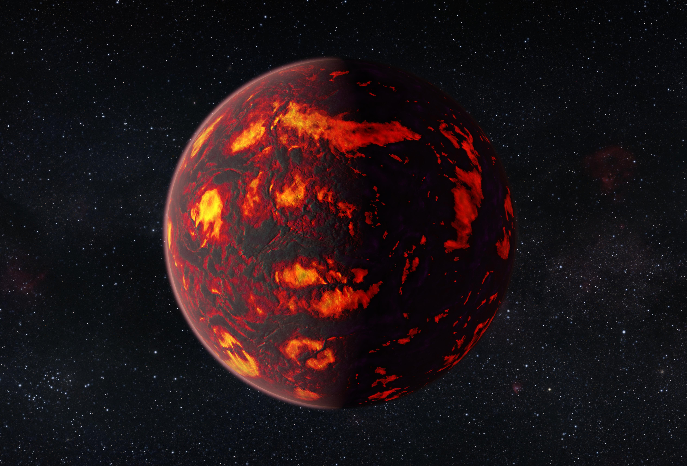
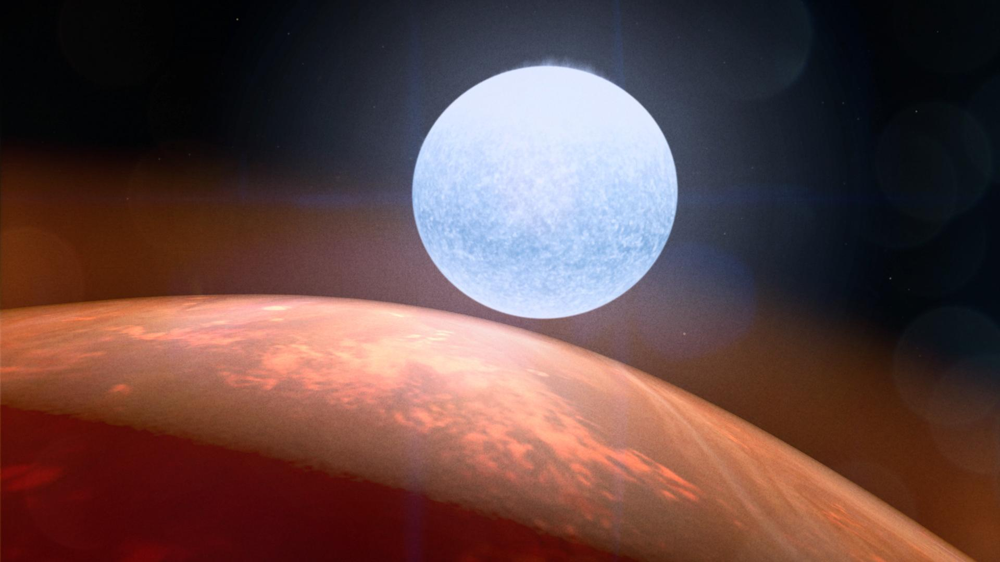
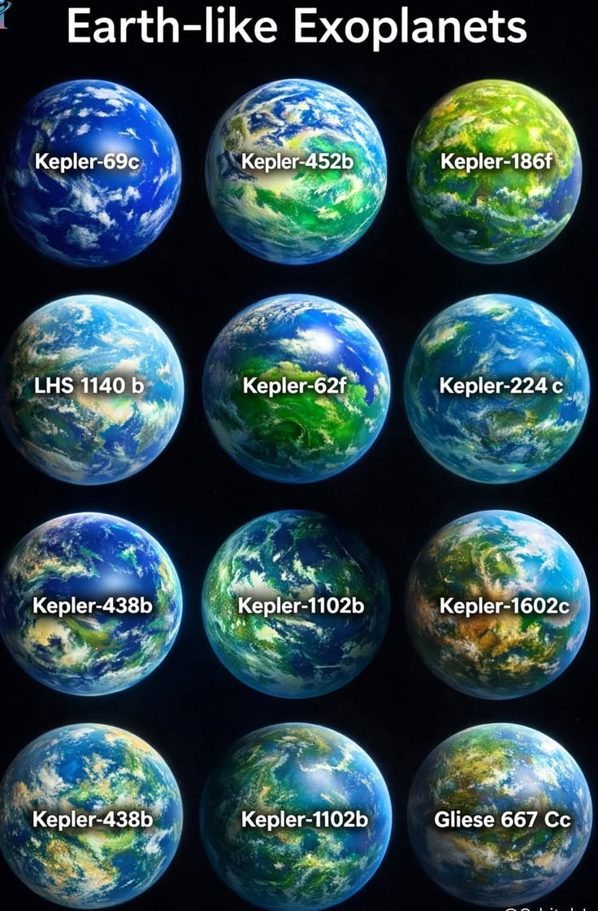

Во Вселенной существуют миллиарды планет, и далеко не все они похожи на Землю. Некоторые вращаются вокруг двух звёзд, другие обладают невероятно высокой температурой, а на отдельных мирах условия настолько необычны, что их трудно представить.
Планеты, находящиеся за пределами Солнечной системы, называют экзопланетами. Их изучение помогает учёным лучше понимать, насколько разнообразными могут быть планетные системы и существует ли где-нибудь ещё жизнь.
Что такое экзопланеты?
Экзопланеты — это планеты, которые обращаются вокруг других звёзд, а не вокруг Солнца. Первые надёжные подтверждения существования планет у обычных звёзд появились в 1990-х годах.
Сегодня астрономы обнаружили тысячи таких миров. Некоторые из них похожи на газовые гиганты, другие напоминают каменистые планеты, а некоторые не имеют аналогов в нашей Солнечной системе.
Планеты, на которых идут необычные дожди
HD 189733 b — голубая планета с необычной погодой
На первый взгляд HD 189733 b напоминает красивый голубой мир. Однако его цвет не должен вводить в заблуждение. Это горячий газовый гигант, расположенный очень близко к своей звезде.
В его атмосфере обнаружены признаки частиц, которые рассеивают синий свет. Учёные предполагают, что там могут существовать облака из силикатных частиц, а сильнейшие ветры способны переносить их с огромной скоростью.

Kepler-16 b — планета двух солнц
Представь себе мир, над которым восходят сразу два солнца. Именно такой необычный планетой является Kepler-16 b. Она обращается вокруг пары звёзд, вращающихся вокруг общего центра масс.
Эта система напоминает вымышленную планету Татуин из «Звёздных войн». Kepler-16 b стала одним из первых убедительных примеров планет, обращающихся вокруг двух звёзд одновременно.

55 Cancri e — мир раскалённой лавы
55 Cancri e — каменистая планета, расположенная приблизительно в 41 световом году от Земли. Она находится настолько близко к своей звезде, что совершает полный оборот вокруг неё примерно за 18 часов.
Температура на её освещённой стороне чрезвычайно высока. Учёные предполагают, что поверхность планеты может содержать огромные области расплавленной породы. Этот мир совсем не похож на привычные нам планеты.

KELT-9 b — планета горячее многих звёзд
KELT-9 b относится к самым горячим известным экзопланетам. Она представляет собой газовый гигант, который обращается очень близко к своей звезде.
Температура на дневной стороне настолько высока, что молекулы в атмосфере могут распадаться на отдельные атомы. Это делает KELT-9 b одним из самых экстремальных миров, известных астрономам.

Как учёные находят экзопланеты?
Большинство экзопланет невозможно увидеть напрямую: они слишком тусклые по сравнению со своими звёздами. Поэтому астрономы используют специальные методы наблюдений.
Один из самых распространённых методов — транзитный. Когда планета проходит перед своей звездой, яркость звезды немного уменьшается. По этим изменениям учёные могут обнаружить планету и оценить некоторые её свойства.
Почему изучение экзопланет так важно?
Исследование экзопланет помогает понять, насколько распространены планетные системы, похожие на нашу. Учёные ищут миры, на которых могут существовать условия, подходящие для жизни, и пытаются выяснить, насколько уникальна Земля.
Каждый новый обнаруженный мир расширяет наши знания о Вселенной и напоминает, насколько разнообразным может быть космос.
Вторая Земля — существует ли она?
Среди тысяч обнаруженных экзопланет особое внимание учёных привлекают миры, которые по некоторым характеристикам напоминают нашу Землю. Некоторые из них имеют сопоставимые размеры, предположительно каменистую поверхность или находятся на таком расстоянии от своей звезды, где при определённых условиях может существовать жидкая вода.

Однако внешнее сходство ещё не означает, что на планете есть жизнь. Даже если её размеры и температура кажутся подходящими, мы пока не знаем, что происходит на её поверхности и в атмосфере.
Земля — единственная известная нам планета, на которой существует жизнь. Но действительно ли она единственная во всей Вселенной?
Возможно, где-то среди далёких звёзд существует мир, который однажды окажется удивительно похожим на наш. И, возможно, мы ещё только приближаемся к его открытию.
← Вернуться к разделу «Наука о космосе»